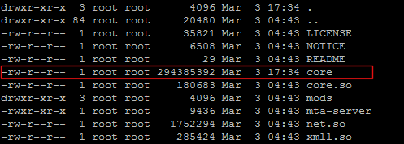

Installing and Running NRPSA Server on GNU Linux
From Nexus RP: Wiki
Contents
Installation
Main binary
Install unzip. To install unzip on Debian, use this command:
apt-get install unzip
Unpack into a directory:
unzip nrp-server-linux-x64.zip
Change to the NRP server install directory:
cd nrp-server-linux-x64
Test
You can now test if the server will start correctly:
./nrp-server
or if using the 64 bit server:
./nrp-server64
Running with 32 or 64 bit Linux
Make sure your server libraries and stuff are up to date
On Debian/Ubuntu this is done with:
apt-get update apt-get upgrade
Running with 32 bit Linux
32 bit Troubleshooting
- If you get a problem with such as "libreadline.so.5: cannot open shared object file: No such file or directory.", it can be solved on 32 bit Debian/Ubuntu by doing this:
apt-get install libreadline5
- If you get a problem with such as "libncursesw.so.5 cannot open shared object file: No such file or directory", it can be solved on 32 bit Debian/Ubuntu by doing this:
apt-get install libncursesw5
- If you get a problem with such as "libmysqlclient.so.16: cannot open shared object file: No such file or directory", it can be solved on Debian/Ubuntu by doing this:
apt-get install libmysqlclient16
If that fails, download libmysqlclient.so.16 and put it in /usr/lib/
Running with 64 bit Linux
Debian 7 (wheezy) 64 bit
Before running NRPSA Server, use this command line for installation of 32 bit libs :
apt-get install lib32ncursesw5 lib32readline5
Install 32 bit libs for your 64 bit distro
For 64 bit Debian 6, this is achieved with:
(Some 64 bit distros have 32 bit libs already installed for you. So this step might not be required)
apt-get install ia32-libs
64 bit Troubleshooting
64 bit Debian/Ubuntu
- If you get a problem with such as "libstdc++.so.6: cannot open shared object file: No such file or directory.", it can be solved on 64 bit Debian/Ubuntu by doing this:
apt-get install lib32stdc++6
- If you get a problem with such as "libz.so.1: cannot open shared object file: No such file or directory.", it can be solved on 64 bit Debian/Ubuntu by doing this:
apt-get install lib32z1
- If you get a problem with such as "libreadline.so.5: cannot open shared object file: No such file or directory.", it can be solved on 64 bit Debian/Ubuntu by doing this:
apt-get install lib32readline5
- If you get a problem with such as "libncursesw.so.5 cannot open shared object file: No such file or directory", it can be solved on 64 bit Debian/Ubuntu by doing this:
apt-get install lib32ncursesw5
- If you get a problem with such as "libmysqlclient.so.16: cannot open shared object file: No such file or directory", it can be solved on Debian/Ubuntu by doing this:
apt-get install libmysqlclient16
- If that fails, download libmysqlclient.so.16 and put it in /usr/lib/
- NOTE: If you are running the experimental NRP x64 server, you will need this file instead:
64 bit CentOS 6
- If you get a problem with such as "libreadline.so.5: cannot open shared object file: No such file or directory.", edit /etc/yum.conf and add this line:
multilib_policy=all
Then issue this command:
yum install compat-readline5
- Further 64 bit solutions can be found on the forums
MySQL Troubleshooting
- If you are using the inbuild MySQL functions such as dbConnect and dbQuery, you will need to have libmysqlclient.so.16 installed.
- If you can't get libmysqlclient.so.16 installed by conventional means, then try downloading the file from here and copying it to your Linux server /usr/lib/ directory.
Cent OS Troubleshooting
- If you are using Cent OS and you get something like /usr/lib/libstdc++.so.6: version `GLIBCXX_3.4.9' not found (required by xmll.so) this can be resolved by doing downloading the archive [here] and unpacking it with the following command:
rpm2cpio libstdc++-4.3.0-8.i386.rpm | cpio -i --make-directories
[Optional] Installing and Configuring an External Web Server
Instructions on how to install and configure Nginx as an external web server for NRP is here: Installing and Configuring Nginx as an External Web Server
Server crashes
If your Linux server crashes, please obtain a backtrace and post a report on our Bug tracker
To obtain a backtrace:
Do you have a core dump file in the the NRP server directory?
It's usually called 'core', and usually over 100MB, and looks something like this:

If you have a core dump file in the the NRP server directory:
- Install gdb. To install gdb on Debian, use this command:
apt-get install gdb
- And from the NRP install directory do this command
gdb nrp-server -c core
- When gdb launches, do this command to get a module list:
i sh
- And then this command to get a backtrace:
bt
- Save the output
- (To exit gdb, use the quit command)
If you do not have a core dump file in the the NRP server directory:
- Install gdb. To install gdb on Debian, use this command:
apt-get install gdb
- And from the NRP server directory start the nrp-server like this:
gdb nrp-server -ex "set print thread-events off" --eval-command run
- Now wait for a crash. (Ignore any weird screen output in the meantime)
- When a crash occurs, do this command to get a module list:
i sh
- And then this command to get a backtrace:
bt
- Save the output
- (To exit gdb, use the quit command)
Server freezes
If your Linux server freezes, please obtain a backtrace with thread information and post a report on our Bug tracker
To obtain a backtrace with thread information:
- Install gdb. To install gdb on Debian, use this command:
apt-get install gdb
- And from the NRP server directory start the nrp-server like this:
gdb nrp-server -ex "set print thread-events off" --eval-command run
- Now wait for a freeze. (Ignore any weird screen output in the meantime)
- When a freeze occurs, press ctrl-c to start gdb
- Then do this command to get a module list:
i sh
- And then this command to get a backtrace:
bt
- And then this command to get thread information:
info threads
- Save the output
- (To exit gdb, use the quit command)